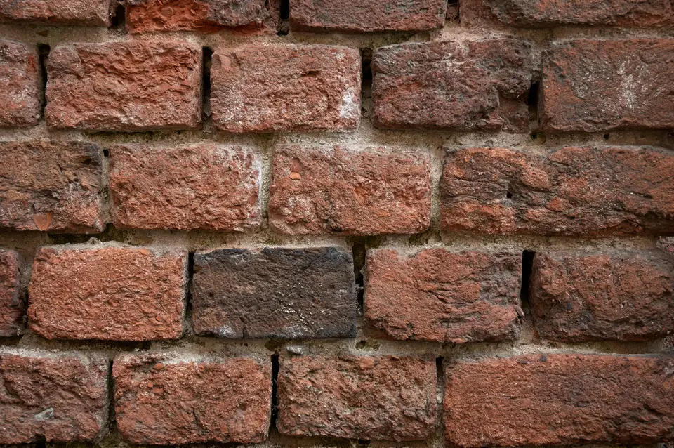
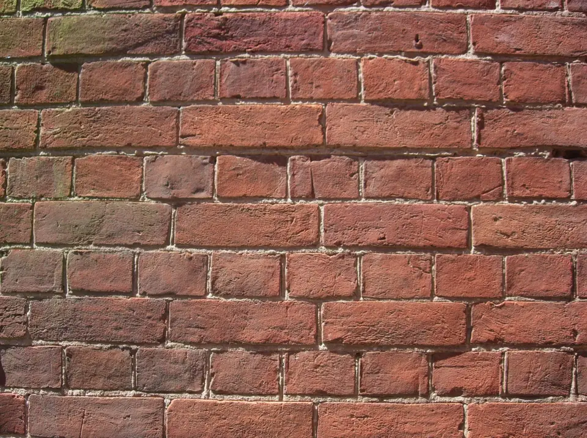

Fondations & Dalles béton
Terrassement, semelles filantes en béton armé, hérisson ventilé et coulage de dalle lisse pour extensions ou maisons neuves.
Artisan maçon spécialisé en maçonnerie générale, fondations solides, élévation de murs porteurs et rénovation lourde sur Toulouse et sa région.

Assureur fictif, contrat n° DEMO-0001 : chaque chantier est couvert dix ans.
Une entreprise déclarée, établie à Toulouse, joignable au 04 00 00 00 00.
Un chiffrage écrit après visite, sans surprise ni ligne cachée.
Nous prenons en charge la structure porteuse de vos bâtiments neufs ou anciens avec une exigence absolue de stabilité et de respect des normes DTU.
Terrassement, semelles filantes en béton armé, hérisson ventilé et coulage de dalle lisse pour extensions ou maisons neuves.
Montage de murs en briques foraines traditionnelles, briques alvéolaires ou parpaings avec chaînages horizontaux et verticaux.
Création de baies vitrées et élargissement de passages avec pose sécurisée de poutres métalliques IPN ou HEB sous étaiement lourd.
Murets de clôture maçonnés avec couvertines, piliers d'entrée renforcés et murs de soutènement drainés contre les poussées de terre.
Quelques exemples représentatifs de travaux de gros œuvre et d'aménagements maçonnés conduits récemment dans l'agglomération toulousaine.



Nous intervenons avec nos camions et engins de chantier sur Toulouse métropole et les communes voisines pour vos projets de gros œuvre.
Une méthode de travail éprouvée qui garantit la conformité réglementaire, le respect des délais convenus et une propreté de site irréprochable.
Reconnaissance du sol, prise de cotes altimétriques et analyse des contraintes de charge du bâtiment existant.
Élaboration d'un chiffrage détaillé poste par poste avec descriptif précis des volumes de béton et armatures.
Installation du périmètre de sécurité, pose des étais de soutènement et approvisionnement des matériaux.
Mise en œuvre soignée dans les règles de l'art, respect des temps de séchage et nettoyage complet du chantier.
Les réponses techniques aux interrogations courantes concernant vos travaux de structure, ouvertures et dalles.
Non, abattre ou ouvrir un mur porteur engage la stabilité mécanique de l'ouvrage. Nous procédons toujours à une inspection rigoureuse et mettons en œuvre des linteaux ou poutres IPN dimensionnés pour reprendre l'intégralité des descentes de charges.
Le béton atteint 80 % de sa résistance mécanique en 7 jours, mais le temps de cure normalisé selon les règles professionnelles est de 28 jours avant toute pose de revêtement lourd ou élévation de nouveaux murs porteurs.
Un chiffrage sérieux de maçonnerie requiert obligatoirement une inspection visuelle des accès, de la nature du sol et des structures attenantes. Contactez-nous pour convenir d'un rendez-vous sur place.
Présentez-nous votre projet de construction, extension ou rénovation de maçonnerie pour obtenir un rendez-vous rapide.